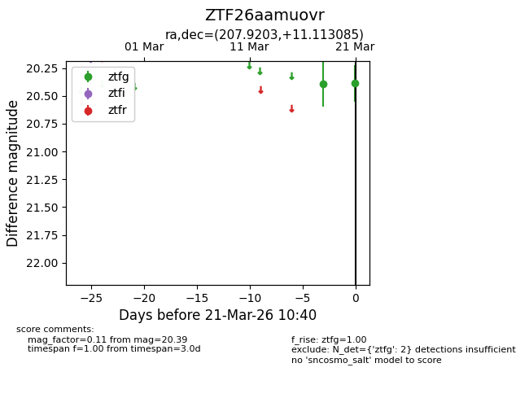
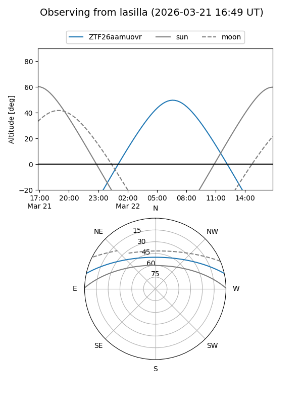
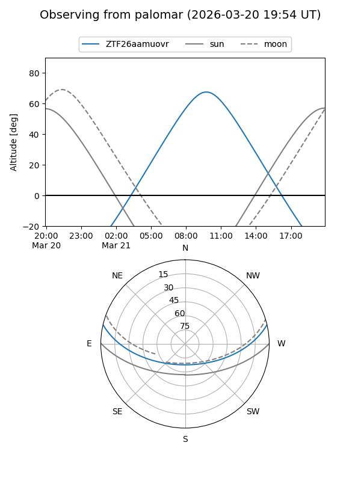

ZTF26aamuovr
Target ZTF26aamuovr at 2026-03-21 10:42
Aliases and brokers:
FINK: link
Lasair: link
ALeRCE: link
alt names
ZTF26aamuovr (ztf,fink_ztf)
Coordinates:
equatorial (ra, dec) = 207.9203,+11.11309
equatorial (HMS+DMS) = 13:51:40.87,+11:06:47.11
galactic (l, b) = (347.3150,+68.62129)
Flags:
Photometry:
last ztfg=20.39
2 ztfg detections
Lightcurve

Visibility


Additional plots